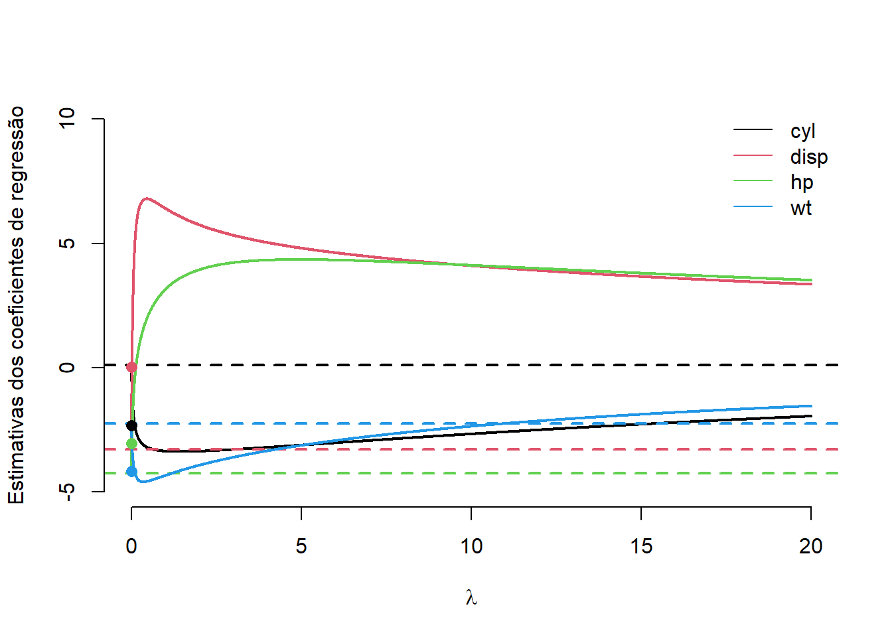

banco <- mtcars[,c("mpg","cyl", "disp","hp","wt")]
pairs(banco)12 O modelo de regressão linear normal
12.1 Introdução
Denominamos por regressão o problema de determinar a média de \(Y\) dado o vetor \(\boldsymbol{x}'=(x_1,\ldots,x_q)\). Em particular se
\[E(Y|\boldsymbol{x},\boldsymbol{\beta})=\boldsymbol{x}'\boldsymbol{\beta}=\sum_{j=1}^q x_j\beta_j,\] dizemos que a regressão é linear (em \(\boldsymbol{\beta}\)) e o objetivo passa a ser fazer inferências sobre \(\boldsymbol{\beta}\).
No problema de regressão, as sequinte nomenclaturas são usuais:
\(Y\): variável resposta, output, resultado, variável dependente
\(\boldsymbol{x}\): variáveis regressoras, input, variável independente
Os termos input e output são usuais em aprendizagem de máquina, enquanto que variável independente e dependente são usuais na área da saúde (vale ressaltar que nã relação com a independência sob o ponto de vista da probabilidade, pois claramente \(Y\) e \(\boldsymbol{X}\) são dependentes).
Sejam \(Y_1,\ldots,Y_n\) uma amostra de variáveis aleatórias independentes. Sejam \(\boldsymbol{x}_1,\ldots,\boldsymbol{x}_n\) vetores de dimensão \(q\). Então, o modelo de regressão linear normal é dado por
\[y|\boldsymbol{x},\boldsymbol{\beta}\sim\hbox{Normal}(\boldsymbol{x}'\boldsymbol{\beta},\sigma^2).\]
Como \(Y_1,\ldots,Y_n\) são independentes, temos que \(\boldsymbol{Y}'=(Y_1,\ldots,Y_n)\) tem distribuição normal multivariada com média
\[E(\boldsymbol{Y}|\boldsymbol{x}_1,\ldots,\boldsymbol{x}_n)=\left(\begin{array}{c}E(Y_1|\boldsymbol{x}_1)\\ \vdots \\ E(Y_n|\boldsymbol{x}_n)\end{array}\right)=\left(\begin{array}{c}\boldsymbol{x}_1'\boldsymbol{\beta}\\ \vdots \\ \boldsymbol{x}_n'\boldsymbol{\beta}\end{array}\right)=\underbrace{\left(\begin{array}{c}\boldsymbol{x}_1'\\ \vdots \\ \boldsymbol{x}_n'\end{array}\right)}_{\boldsymbol{X}}\boldsymbol{\beta}=\boldsymbol{X}\boldsymbol{\beta}\]
e como \(Var(Y_i|\boldsymbol{X})=Var(Y_i|\boldsymbol{x}_i)=\sigma^2\) e, para \(i\neq j,\) \(Cov(Y_i,Y_j|\boldsymbol{X})=0\), teremos que \[Var(\boldsymbol{Y}|\boldsymbol{X})=\sigma^2\text{I}_q\] Portanto \(\boldsymbol{Y}|\boldsymbol{X},\boldsymbol{\beta},\sigma^2\sim\hbox{Normal}(\boldsymbol{X}\boldsymbol{\beta},\sigma^2\text{I}_q)\). Sua função de verossimilhança é
\[L(\boldsymbol{\beta},\sigma^2)\propto \left(\frac{1}{2\pi\sigma^2}\right)^{\frac{n}{2}}e^{-\frac{1}{2\sigma^2}(\boldsymbol{y}-\boldsymbol{X}\boldsymbol{\beta})'(\boldsymbol{y}-\boldsymbol{X}\boldsymbol{\beta})}.\] Note que
\[\begin{align} (\boldsymbol{y}-\boldsymbol{X}\boldsymbol{\beta})'(\boldsymbol{y}-\boldsymbol{X}\boldsymbol{\beta})&= \boldsymbol{y}'\boldsymbol{y}+\boldsymbol{\beta}'(\boldsymbol{X}'\boldsymbol{X})\boldsymbol{\beta}-2\boldsymbol{\beta}'\boldsymbol{X}'\boldsymbol{y}\\&= \boldsymbol{y}'\boldsymbol{y}+\boldsymbol{\beta}'(\boldsymbol{X}'\boldsymbol{X})\boldsymbol{\beta}-2\boldsymbol{\beta}'(\boldsymbol{X}'\boldsymbol{X})\underbrace{(\boldsymbol{X}'\boldsymbol{X})^{-1}\boldsymbol{X}'\boldsymbol{y}}_{\hat{\boldsymbol{\beta}}} \\&= \boldsymbol{y}'\boldsymbol{y}+\boldsymbol{\beta}'(\boldsymbol{X}'\boldsymbol{X})\boldsymbol{\beta}-2\boldsymbol{\beta}'(\boldsymbol{X}'\boldsymbol{X})\hat{\boldsymbol{\beta}}\pm \hat{\boldsymbol{\beta}}'(\boldsymbol{X}'\boldsymbol{X})\hat{\boldsymbol{\beta}}\\&=(\boldsymbol{\beta}-\hat{\boldsymbol{\beta}})'(\boldsymbol{X}'\boldsymbol{X})(\boldsymbol{\beta}-\hat{\boldsymbol{\beta}})+\boldsymbol{y}'\boldsymbol{y}-\hat{\boldsymbol{\beta}}'(\boldsymbol{X}'\boldsymbol{X})\hat{\boldsymbol{\beta}}\end{align} \] Observe que \[\begin{align}\hat{\boldsymbol{\beta}}'(\boldsymbol{X}'\boldsymbol{X})\hat{\boldsymbol{\beta}}&=((\boldsymbol{X}'\boldsymbol{X})^{-1}\boldsymbol{X}'\boldsymbol{y})'(\boldsymbol{X}'\boldsymbol{X})(\boldsymbol{X}'\boldsymbol{X})^{-1}\boldsymbol{X}'\boldsymbol{y}\\ &=((\boldsymbol{X}'\boldsymbol{X})^{-1}\boldsymbol{X}'\boldsymbol{y})'\boldsymbol{X}'\boldsymbol{y}\\&= \boldsymbol{y}\boldsymbol{X}(\boldsymbol{X}'\boldsymbol{X})^{-1}\boldsymbol{X}'\boldsymbol{y}\end{align}\] logo
\[\begin{align} (\boldsymbol{y}-\boldsymbol{X}\boldsymbol{\beta})'(\boldsymbol{y}-\boldsymbol{X}\boldsymbol{\beta})&= (\boldsymbol{\beta}-\hat{\boldsymbol{\beta}})'(\boldsymbol{X}'\boldsymbol{X})(\boldsymbol{\beta}-\hat{\boldsymbol{\beta}})+\underbrace{\boldsymbol{y}'(\text{I}_n-\boldsymbol{X}(\boldsymbol{X}'\boldsymbol{X})^{-1}\boldsymbol{X}')\boldsymbol{y}}_{SQR}\end{align} \] onde \(SQR\) é a sigla para soma de quadrados de resíduos. Esse termo tem esse nome porque \[SQR=(\boldsymbol{y}-\boldsymbol{X}\hat{\boldsymbol{\beta}})'(\boldsymbol{y}-\boldsymbol{X}\hat{\boldsymbol{\beta}})\] e \[\boldsymbol{r}=\boldsymbol{y}-\boldsymbol{X}\hat{\boldsymbol{\beta}}\] é denominado vetor de resíduos. Portanto, a função de verossimilhança pode ser reescrita como
\[L(\boldsymbol{\beta},\sigma^2)\propto \left(\frac{1}{2\pi\sigma^2}\right)^{\frac{n}{2}}e^{-\frac{1}{2\sigma^2}(\boldsymbol{\beta}-\hat{\boldsymbol{\beta}})'(\boldsymbol{X}'\boldsymbol{X})(\boldsymbol{\beta}-\hat{\boldsymbol{\beta}})-\frac{1}{2\sigma^2}SQR}.\] ## Priori conjugada e suas limitações
Seja \(\phi=1/\sigma^2\). Então, a priori normal-gama, também escrita como \[\begin{align}\boldsymbol{\beta}|\phi,\boldsymbol{X}&\sim\hbox{Normal}(\boldsymbol{\beta}_0,\phi^{-1} C_0^{-1})\\ \phi&\sim\hbox{Gama}\left(\frac{n_0}{2},\frac{s_0}{2}\right)\end{align}\] é conjugada para o modelo linear. A posteriori é dada por
\[\begin{align}f(\boldsymbol{\beta},\phi|\text{dados})&\propto \phi^\frac{n}{2}e^{-\frac{\phi}{2}(\boldsymbol{\beta}-\hat{\boldsymbol{\beta}})'(\boldsymbol{X}'\boldsymbol{X})(\boldsymbol{\beta}-\hat{\boldsymbol{\beta}})-\frac{\phi}{2}SQR}\times\\&|\phi\boldsymbol{C}_0|^{1/2}e^{-\frac{\phi}{2}(\boldsymbol{\beta}-\boldsymbol{\beta}_0)'\boldsymbol{C}_0(\boldsymbol{\beta}-\boldsymbol{\beta}_0)]}\phi^{\frac{n_0}{2}-1}e^{-\frac{s_0}{2}\phi}\\&=\phi^{\frac{q}{2}}e^{-\frac{\phi}{2}[(\boldsymbol{\beta}-\hat{\boldsymbol{\beta}})'(\boldsymbol{X}'\boldsymbol{X})(\boldsymbol{\beta}-\hat{\boldsymbol{\beta}})+(\boldsymbol{\beta}-\boldsymbol{\beta}_0)'\boldsymbol{C}_0(\boldsymbol{\beta}-\boldsymbol{\beta}_0)]}\phi^{\frac{n+n_0}{2}-1}e^{\frac{\phi}{2}(SQR+s_0)}\end{align}\] Como \[\begin{align} &(\boldsymbol{\beta}-\hat{\boldsymbol{\beta}})'(\boldsymbol{X}'\boldsymbol{X})(\boldsymbol{\beta}-\hat{\boldsymbol{\beta}})+(\boldsymbol{\beta}-\boldsymbol{\beta}_0)'\boldsymbol{C}_0(\boldsymbol{\beta}-\boldsymbol{\beta}_0)\\&=\boldsymbol{\beta}'[\underbrace{(\boldsymbol{X}'\boldsymbol{X})+\boldsymbol{C}_0}_{\boldsymbol{C}_1}]\boldsymbol{\beta}-2\boldsymbol{\beta}'( (\boldsymbol{X}'\boldsymbol{X})\hat{\boldsymbol{\beta}}+\boldsymbol{C}_0\boldsymbol{\beta}_0)+\hat{\boldsymbol{\beta}}'(\boldsymbol{X}'\boldsymbol{X})\hat{\boldsymbol{\beta}}+\boldsymbol{\beta}_0'\boldsymbol{C}_0\boldsymbol{\beta}_0\\ &=\boldsymbol{\beta}'\boldsymbol{C}_1\boldsymbol{\beta}-2\boldsymbol{\beta}'\boldsymbol{C}_1[\underbrace{\boldsymbol{C}_1^{-1}( (\boldsymbol{X}'\boldsymbol{X})\hat{\boldsymbol{\beta}}+\boldsymbol{C}_0\boldsymbol{\beta}_0)}_{\tilde{\boldsymbol{\beta}}}]+\hat{\boldsymbol{\beta}}'(\boldsymbol{X}'\boldsymbol{X})\hat{\boldsymbol{\beta}}+\boldsymbol{\beta}_0'\boldsymbol{C}_0\boldsymbol{\beta}_0\\ &=\boldsymbol{\beta}'\boldsymbol{C}_1\boldsymbol{\beta}-2\boldsymbol{\beta}'\boldsymbol{C}_1\tilde{\boldsymbol{\beta}}\pm\tilde{\boldsymbol{\beta}}'\boldsymbol{C}_1\tilde{\boldsymbol{\beta}}+\hat{\boldsymbol{\beta}}'(\boldsymbol{X}'\boldsymbol{X})\hat{\boldsymbol{\beta}}+\boldsymbol{\beta}_0'\boldsymbol{C}_0\boldsymbol{\beta}_0\\ &=(\boldsymbol{\beta}-\tilde{\boldsymbol{\beta}})'\boldsymbol{C}_1(\boldsymbol{\beta}-\tilde{\boldsymbol{\beta}})+\hat{\boldsymbol{\beta}}'(\boldsymbol{X}'\boldsymbol{X})\hat{\boldsymbol{\beta}}+\boldsymbol{\beta}_0'\boldsymbol{C}_0\boldsymbol{\beta}_0-\tilde{\boldsymbol{\beta}}'\boldsymbol{C}_1\tilde{\boldsymbol{\beta}} \end{align}\] Além disso, pode-se mostrar que \[\hat{\boldsymbol{\beta}}'(\boldsymbol{X}'\boldsymbol{X})\hat{\boldsymbol{\beta}}+\boldsymbol{\beta}_0'\boldsymbol{C}_0\boldsymbol{\beta}_0-\tilde{\boldsymbol{\beta}}'\boldsymbol{C}_1\tilde{\boldsymbol{\beta}}=(\hat{\boldsymbol{\beta}}-\boldsymbol{\beta}_0)'(\boldsymbol{C}_0+(\boldsymbol{X}'\boldsymbol{X}^{-1}))^{-1}(\hat{\boldsymbol{\beta}}-\boldsymbol{\beta}_0)\] \[\begin{align}f(\boldsymbol{\beta},\phi|\text{dados})&\propto\phi^{\frac{q}{2}}e^{-\frac{\phi}{2}(\boldsymbol{\beta}-\tilde{\boldsymbol{\beta}})'\boldsymbol{C}_1(\boldsymbol{\beta}-\tilde{\boldsymbol{\beta}})}\phi^{\frac{n+n_0}{2}-1}e^{-\frac{\phi}{2}(SQR+s_0+(\hat{\boldsymbol{\beta}}-\boldsymbol{\beta}_0)'(\boldsymbol{C}_0+(\boldsymbol{X}'\boldsymbol{X}^{-1}))^{-1}(\hat{\boldsymbol{\beta}}-\boldsymbol{\beta}_0))}\end{align}\] ou seja \[\begin{align}\boldsymbol{\beta}|\phi,\hbox{dados}&\sim\hbox{Normal}(\tilde{\boldsymbol{\beta}},\phi^{-1}\boldsymbol{C}_1^{-1})\\ \phi|\text{dados}&\sim\hbox{Gama}\left(\frac{n_0+n}{2},\frac{s_1}{2}\right) \end{align}\] onde \[s_1=SQR+s_0+(\hat{\boldsymbol{\beta}}-\boldsymbol{\beta}_0)'(\boldsymbol{C}_0+(\boldsymbol{X}'\boldsymbol{X}^{-1}))^{-1}(\hat{\boldsymbol{\beta}}-\boldsymbol{\beta}_0)\]
O estimador de Bayes para \(\boldsymbol{\beta}\) é
\[\tilde{\boldsymbol{\beta}}=\boldsymbol{C}_1^{-1}[ (\boldsymbol{X}'\boldsymbol{X})\hat{\boldsymbol{\beta}}+\boldsymbol{C}_0\boldsymbol{\beta}_0]\]
Para elicitar corretamente a priori conjugada é necessário elicitar a matriz \(\boldsymbol{C}_0\), que é um desafio. A solução mais simples é considerar que \(\boldsymbol{C_0}=\lambda \text{I}_q\) e valores pequenos de \(\lambda\) levam a uma informação a priori mais difusa. Essa solução é utilizada na inferência frequentista, conforme podemos ver abaixo.
A relação com a Regressão Ridge O estimador frequentista existe apenas quando \(\boldsymbol{X}'\boldsymbol{X}\) tem inversa. Essa inversa pode não existir quando \(q>n\) ou quando as colunas de \(\boldsymbol{X}\) são altamente correlacionada (esse fenômeno é denoominado multicolinearidade). Uma solução é utilizar o estimador de regressão de Ridge, dado por
\[\hat{\boldsymbol{\beta}}_{R}(\lambda)=[\lambda\text{I}_q+ \boldsymbol{X}'\boldsymbol{X}]^{-1}\boldsymbol{X}'\boldsymbol{Y},\] onde \(\lambda\) é denominado shrinkage (algo como parâmetro de contração, embora também possa ser denominado parâmetro de regularização). A escolha de \(\lambda\) é um problema em aberto, pois não há garantias de resultados ótimos.
Sob o ponto de vista bayesiano, fazendo \(\boldsymbol{\beta}_0=\text{0}_q\) e \(\boldsymbol{C}_0=\lambda\text{I}_q\), temos que
\[\begin{align}\tilde{\boldsymbol{\beta}}&=(\lambda\text{I}_q +\boldsymbol{X}'\boldsymbol{X})^{-1} (\boldsymbol{X}'\boldsymbol{X})\hat{\boldsymbol{\beta}}\\&= (\lambda\text{I}_q +\boldsymbol{X}'\boldsymbol{X})^{-1} (\boldsymbol{X}'\boldsymbol{X})(\boldsymbol{X}'\boldsymbol{X})^{-1}\boldsymbol{X}'\boldsymbol{Y}\\&= [\lambda\text{I}_q+ \boldsymbol{X}'\boldsymbol{X}]^{-1}\boldsymbol{X}'\boldsymbol{Y}=\hat{\beta}(\lambda),\end{align}\] ou seja, o estimador de Bayes é o estimador da regressão Ridge. Neste caso, o aumento de \(\lambda\) implica no aumento da crença a priori de que \(\boldsymbol{\beta}\) é zero.
Exemplo. mtcars
O banco de dados mtcars, disponível no R, apresenta estatísticas de design e perfomance de 32 automóveis. Considere as seguintes variáveis:
mpg: milhas/galãocyl: número de cilindrosdisp: deslocamento (polegadas cúbicas)hp: potência brutawt: peso (em libras)
Considerando mpg como variável resposta, vamos analisar sua relação com as demais.
Algumas relações, como disp - deslocamento - e hp - potência bruta, não parecem lineares. Podemos linearizar a relação aplicando a transformação logaritmica
banco2 <- banco
banco2$disp <- log ( banco$disp )
banco2$hp <- log ( banco$hp )
pairs(banco2)
Vamos ajustar um modelo de regressão linear com \(\boldsymbol{\beta}_0=\text{0}_6\), \(n_0=0,01,s_0=0,01\), \(\boldsymbol{C}_0=\lambda\text{I}_6\) para diferentes valores de \(\lambda\). Abaixo, aprentamos a estimativa de bayes para \(\boldsymbol{\beta}\) para diferentes valores de \(\lambda\)
X <- as.matrix(cbind(1,banco2[,-1]))
y = banco2[,1]
beta_til <- function(lambda) solve( diag(lambda,5)+t(X)%*%X)%*%t(X)%*%y
m=6
lambda = seq(.01,4,.01)
resp = NULL
for(l in lambda){
resp <- rbind(resp, beta_til(l)[,1])
}
plot.new()
plot.window(ylim=c(-5,10), xlim=c(0,m))
lines(lambda, resp[,2],col=1)
lines(lambda, resp[,3],col=2)
lines(lambda, resp[,4],col=3)
lines(lambda, resp[,5],col=4)
axis(1)
axis(2)
legend('topright',names(banco2)[-1],col=1:4,bty='n',lty=1)
12.2
model <- lm(mpg~ cyl + disp + hp + wt, data = banco2)
summary(model)
Call:
lm(formula = mpg ~ cyl + disp + hp + wt, data = banco2)
Residuals:
Min 1Q Median 3Q Max
-3.0121 -1.5402 -0.3699 0.6793 4.5356
Coefficients:
Estimate Std. Error t value Pr(>|t|)
(Intercept) 64.92479 9.95173 6.524 5.39e-07 ***
cyl 0.09999 0.72702 0.138 0.8916
disp -3.29786 2.79434 -1.180 0.2482
hp -4.25491 1.93079 -2.204 0.0363 *
wt -2.25412 0.95433 -2.362 0.0256 *
---
Signif. codes: 0 '***' 0.001 '**' 0.01 '*' 0.05 '.' 0.1 ' ' 1
Residual standard error: 2.337 on 27 degrees of freedom
Multiple R-squared: 0.869, Adjusted R-squared: 0.8496
F-statistic: 44.79 on 4 and 27 DF, p-value: 1.536e-11